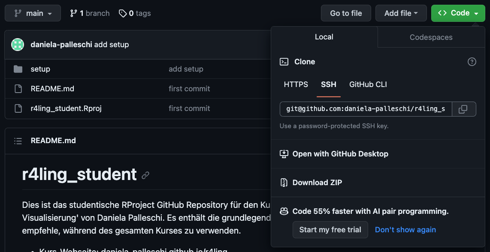
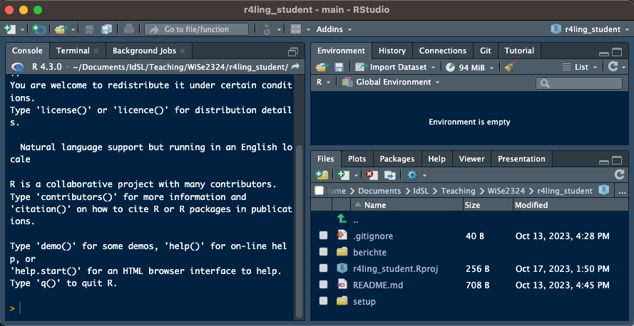
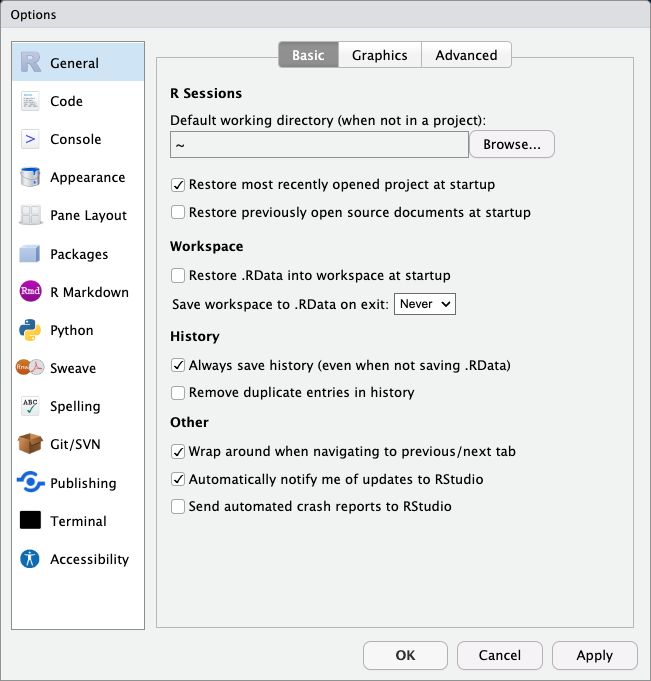
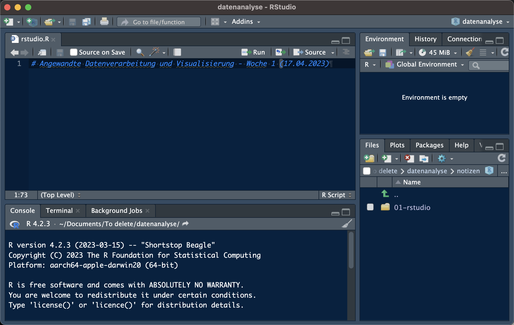

1 Einführung in R und RStudio
Pakete, Funktionen und Objekte in R-Skripten
Heutige Ziele
- R und RStudio installieren
- in der Lage sein, Zusatzpakete zu installieren
- in der Lage sein, Hilfe für Pakete und Funktionen zu erhalten
- in der Lage sein, Objekte in der Konsole zu erstellen
Weitere Lektüre
- Dieser Vortrag basiert lose auf Kapitel 1 - Introduction und Kapitel 3 - Workflow Basics von Wickham et al. (2023)
- dieser Kurs folgt mehr oder weniger diesem Buch
- wo möglich, ersetze ich die Datensätze im Buch durch linguistische Datenbeispiele
1.1 Vorbereitung
- hoffentlich haben Sie R und RStudio bereits installiert/aktualisiert
- falls nicht: Versuchen Sie es mit Posit Cloud für heute posit.cloud
- Gehen Sie zum Kurs GitHub und laden Sie eine ZIP-Datei des Repositorys herunter
- große grüne Schaltfläche ‘<> Code’ > ZIP herunterladen
1.2 RProjekt
- Suchen Sie die ZIP-Datei, die Sie soeben heruntergeladen haben, auf Ihrem Computer und dekomprimieren Sie sie.
- Öffnen Sie den Ordner und navigieren Sie zu r4ling_student.Rproj, doppelklicken Sie darauf
- Sie sollten nun RStudio sehen, wie in Abbildung 1.1
- Jetzt können wir an unserem ersten Skript arbeiten

Warnung
Wichtig!!
Verschieben oder benennen Sie den Ordner data/ nicht um! Sie müssen denselben Dateipfad zu den Datensätzen haben, um meinen Code in den nächsten Wochen nahtlos verwenden zu können.
1.3 R in RStudio
- Öffnen Sie RStudio immer durch einen Doppelklick auf
r4ling_student.Rproj(für diesen Kurs) - klicken Sie auf
File > New File > R Script- sehen Sie nun vier Quadrate (statt 3 in Abbildung 1.1):
- Texteditor - oben Links - wo wir unseren Code schreiben werden
- R-Konsole (EN: Console) - unten links - wo wir die Ausgabe unseres Codes und Warn-/Fehlermeldungen sehen werden
- Arbeitsumgebung (EN: Environment) - oben rechts - wo unsere Daten und Objekte nach dem Laden gespeichert werden
- Dateien und Grafikausgabe - unten links - wo wir unsere Dateien und die von uns erstellten Grafiken sehen oder Hilfe bekommen können
1.3.1 Erweitungspakete
- R hat eine Reihe von nativen Funktionen und Datensätzen, auf die wir zugreifen können
- ähnlich wie die Standard-Apps, die auf Ihrem Handy vorinstalliert sind
- Jeder kann Zusatzpakete für R erstellen, z.B.,
- für Datenvisualisierung
- Datenverarbeitung
- Dies ist ähnlich wie bei Handy-Apps, die von jedem erstellt und auf Ihr Gerät heruntergeladen werden können
- aber Pakete sind immer kostenlos
- Es gibt 2 Schritte, um ein Paket zu verwenden:
- Installieren des Pakets (einmalig) mit
install.packages("Paket") - Laden Sie das Paket (zu Beginn jeder Sitzung)
library(Paket)
- Installieren des Pakets (einmalig) mit
1.3.1.1 Paket-Installation
- erfolgt mit der Funktion
install.packages()- Sie machen dies nur einmal (wie das Herunterladen einer App)
- das Paket
tidyverseist sehr hilfreich für Datenverarbeitung und Visualisierung- Installieren wir es jetzt
Paket-Installation
- installieren Sie die Pakete
tidyverseundbeepr
install.packages("tidyverse")
install.packages("beepr")
Pakete in der Konsole installieren
Installieren Sie Pakete immer über die Konsole, nicht über ein Skript!
Sie können auch die Registerkarte “Pakete” in der unteren rechten Box verwenden (Pakete > Installieren)
1.3.1.2 tinytex
- wir brauchen auch LaTeX und
tinytex(Xie, 2023), um PDF-Dokumente zu erstellen - führen Sie diesen Code aus, um
tinytexzu installieren
## run this in the console
install.packages("tinytex")
tinytex::install_tinytex()- Sie müssen auch LaTeX installieren, wenn Sie es noch nicht haben: https://www.latex-project.org/get/
1.3.2 Laden eines Pakets
- die Funktion
library()lädt ein Paket in Ihre Umgebung - dies muss zu Beginn jeder Sitzung geschehen, um auf das entsprechende Paket zugreifen zu können
library(beepr)1.3.2.1 Verwendung einer Funktion
- Sobald Sie ein Paket geladen haben, können Sie auf dessen Funktionen zugreifen
- Zum Beispiel hat das Paket
beepreine Funktionbeep(), probieren wir sie aus
in der Konsole laufen
beep()1.3.2.2 Funktionsargumente
- Argumente enthalten optionale Informationen, die an eine Funktion übergeben werden
- Die Funktion
beep()hat das Argumentsound, das einen numerischen Wert von 1:11 annimmt. - Versuchen Sie, den folgenden Code mit anderen Zahlen auszuführen, was passiert?
- Die Funktion
in der Konsole laufen
beep(sound = 5)Funktionsargumente
?help
Sie können mehr über eine Funktion (einschließlich ihrer verfügbaren Argumente) herausfinden, indem Sie ihren Namen nach einem Fragezeichen in die Konsole schreiben (z.B. ?beep). Versuchen Sie, ?beep auszuführen. Kannst du auf der Hilfeseite herausfinden, was du anstelle von sound = 5 schreiben kannst, um denselben Ton zu erzeugen?
1.3.3 Aufgabe: Paket-Installation
Aufgabe
Wir brauchen auch das here-Paket. Installieren Sie dieses.
Nachdem Sie das Paket installiert haben, führen Sie den Befehl here() aus. Was geschieht?
1.4 Reproduzierbarkeit
- in diesem Kurs werden wir lernen, wie man reproduzierbare Berichte erstellt
- Das bedeutet, dass unser Code später noch einmal ausgeführt werden kann und immer noch die gleichen Ergebnisse liefert
- wenn Ihre Arbeit reproduzierbar ist, können andere Leute (und Sie selbst) Ihre Arbeit verstehen und überprüfen
- Für Kursaufgaben werden Sie Berichte sowie den Quellcode einreichen, die ich auf meinem Rechner ausführen können sollte
1.4.1 RStudio-Einstellungen
- wir wollen immer mit einem freien Arbeitsbereich in RStudio beginnen, um die Reproduzierbarkeit zu gewährleisten
- Wir wollen auch niemals unseren Arbeitsbereich für später speichern
- wir wollen nur unseren Code (und die Ausgabeberichte) speichern
- Gehen Sie zu
Tools > Global Options- Deaktivieren Sie das Kontrollkästchen
Restore .RData into workspace at startup - Setzen Sie
Save workspace to .RData on exit:toNever
- Deaktivieren Sie das Kontrollkästchen
RStudio-Einstellungen
RStudio: Tools > Global Options:
Restore .RData into workspace at startup- nein
Save workspace to .RData on exit:Never

RStudio-Einstellungen
- Klicken Sie auf
Appearance(linke Spalte)- Öffnen Sie die Optionen “Editor Theme” und wählen Sie ein Farbschema, das Ihnen gefällt
- Sie können auch die Schriftart/Schriftgröße ändern, wenn Sie dies wünschen
1.4.2 Aufgabe: neues R-Skript
Aufgabe
- in RStudio:
File > New File > R Script- wenn sich oben links ein neues Fenster öffnet: “Datei > Speichern unter…”.
- speichern Sie es in Ihrem ‘notizen’ Ordner
- schreiben Sie oben in das Skript:
## Angewandte Datenverarbeitung und Visualisierung - Woche 1 (17.04.2023)
- wenn sich oben links ein neues Fenster öffnet: “Datei > Speichern unter…”.

1.5 Rechnen in R
- können wir Berechnungen in R durchführen
- wir können addieren (
+), subtrahieren (-), multiplizieren (*) und dividieren (/)
1.5.1 Aufgabe: Berechnungen
Aufgabe
- Versuchen Sie, die folgenden Berechnungen in der Konsole auszuführen:
# Addition
16+32[1] 48# Multiplikation
16*32[1] 512# Subtraktion
16-32[1] -16# Division
16/32[1] 0.5- schreiben Sie diese Berechnungen in Ihr Skript, und drücken Sie
Cmd/Strg-Enter, um sie auszuführen
- Was passiert?
1.5.2 Kommentare
- Sie haben vielleicht bemerkt, dass in meinen Code-Blöcken z. B.
# Subtraktionüber dem Code stand - R ignoriert jeden Text nach
#(plus ein Leerzeichen ) - also können wir Kommentare nach
#schreiben
# Kommentar zum folgenden Code
16-32[1] -16- Wir können auch eine Abschnittsüberschrift erstellen, um unsere R-Skripte zu strukturieren, indem wir vier # nach einem Titel hinzufügen
- Die Struktur des Skripts kann dann durch Klicken auf die Schaltfläche “Gliederung” oberhalb des Skriptfensters angezeigt werden
# Rechnen mit R ####
# Subtraction
16-32[1] -161.5.3 Objekte
- wir können auch Werte als Objekte/Variablen speichern, die in der Arbeitsumgebung gespeichert sind
x <- 16
y <- 32
Assignment operator
Das Symbol <- ist ein sogenannter assignment operator. Es erstellt ein neues Objekt in Ihrer Arbeitsumgebung oder überschreibt ein vorhandenes Objekt mit demselben Namen. Es ist wie ein Pfeil, der sagt: “Nimm das, was rechts steht, und speichere es als den Objektnamen auf der linken Seite”.
1.5.4 Rechnen mit Funktionen
- es gibt auch eingebaute Funktionen für komplexere Berechnungen
- z.B.,
mean()(DE: Durchschnitt),sum()(DE: Summe) - was passiert, wenn wir folgendes ausführen?
sum(6,10)[1] 166+10[1] 16mean(6,10)[1] 6(6+10)/2[1] 8Rechnen mit Funktionen
- die Funktion
mean()nimmt nur ein Argument an; alles andere wird ignoriert- das Komma in
6,10listet 2 Argumente auf, also wird alles nach dem Komma ignoriert
- das Komma in
- wenn wir mehr als ein Objekt in ein Argument einschließen wollen, müssen wir die “concatenate”-Funktion
c()verwenden- “concatenate” bedeutet zusammenfügen oder kombinieren
mean(c(6,10))[1] 8Rechnen mit Funktionen
- Sie können auch benannte Objekte (d.h. die in Ihrer Arbeitsumgebung) verwenden, die einen numerischen Wert haben
Aufgabe: Rechnen mit Funktionen
- Versuchen Sie, die Funktion
mean()mit Ihren gespeicherten Variablen (xundy) als “verkettete” Argumente auszuführen - Machen Sie dasselbe mit der Funktion
sum(). Was passiert, wenn Siec()nicht verwenden?
1.6 Vektoren
- Vektoren sind eine Liste von Elementen desselben Typs (z. B. numerisch, Zeichenkette)
- wir können einen Vektor mit der Verkettungsfunktion c() erstellen
- Der folgende Code speichert in einem Objekt namens ‘vec’ einen Vektor aus mehreren Zahlen
# einen Vektor erstellen
vec <- c(171, 164, 186, 191)- der folgende Code ruft das Objekt auf, das wir als ‘vec’ gespeichert haben, und gibt seinen Inhalt aus
# print vec
vec[1] 171 164 186 1911.6.1 Arithmetic mit Vektoren
- Grundlegende Arithmetik auf Vektoren wird auf jedes Element angewendet
# add 5 to vec
vec + 5[1] 176 169 191 196- können wir auch Funktionen auf Vektoren anwenden
# Summe von vec
sum(vec)[1] 712# Mittelwert von vec
mean(vec)[1] 178# Quadratwurzel aus vec
sqrt(vec)[1] 13.07670 12.80625 13.63818 13.820271.6.2 Ausgabe: Vektoren
Ausgabe
- Erstelle einen Vektor namens
vec1, der die Werte 12, 183, 56, 25 und 18 enthält - Erstellen Sie einen Vektor namens
vec2, der die Werte 8, 5, 1, 6 und 8 enthält - Create a vector called
vec3that contains the values 28, 54, 10, 13, 2, and 81 - Finde die Summe von
vec1. - Finde die Summe von vec1 plus
vec2. Wie unterscheidet sich das Ergebnis von dem, das Sie für vec1 allein erhalten haben? - Was passiert, wenn du versuchst, die Summe von
vec1undvec3zu finden?
1.7 Endergebnis
Speichern Sie Ihr R-Skript (
File > Save, oderCmd/Strg-S)Sie sollten nun einen RProject-Ordner für diesen Kurs, der Folgendes enthält:
r4ling_student.RProj`- einen Ordner namens
Daten - einen Ordner namens
notes, der Folgendes enthält + eine.R-Datei mit der heutigen Arbeit
Sie wissen jetzt, wie man
- einfache Berechnungen in R durchführen
- Objekte in Ihrer Arbeitsumgebung zu speichern
- einfache mathematische Berechnungen mit Ihren gespeicherten Objekten durchführen
1.8 Session Info
- Um die Reproduzierbarkeit zu verbessern, ist es nützlich, die Version von R, RStudio und die verwendeten Pakete zu verfolgen
- Zu diesem Zweck können Sie die folgenden Befehle ausführen:
## R version
R.version.string[1] "R version 4.4.0 (2024-04-24)"## R version name
R.version$nickname[1] "Puppy Cup"## RStudio version
RStudio.Version()$version
## RStudio version name
RStudio.Version()$release_name## alle Paketeversionen
sessionInfo()1.9 Nächste Woche
vor nächster Woche, stellen Sie bitte sicher, dass Sie:
- R und RStudio installiert/aktualisiert haben
- die Pakete tidyverse und here installiert haben
- bitte stellen Sie sicher, dass Sie die Übungen des heutigen Kurses in Ihrem R-Skript durcharbeiten
- (optional) speichern Sie das Skript, und laden Sie es auf Moodle hoch, wenn Sie es auf Ihre 6 Skripte für die Teilnahme-LP anrechnen lassen möchten
Session Info
Hergestellt mit R version 4.4.0 (2024-04-24) (Puppy Cup) und RStudioversion 2023.3.0.386 (Cherry Blosson).
sessionInfo()R version 4.4.0 (2024-04-24)
Platform: aarch64-apple-darwin20
Running under: macOS Ventura 13.2.1
Matrix products: default
BLAS: /Library/Frameworks/R.framework/Versions/4.4-arm64/Resources/lib/libRblas.0.dylib
LAPACK: /Library/Frameworks/R.framework/Versions/4.4-arm64/Resources/lib/libRlapack.dylib; LAPACK version 3.12.0
locale:
[1] en_US.UTF-8/en_US.UTF-8/en_US.UTF-8/C/en_US.UTF-8/en_US.UTF-8
time zone: Europe/Berlin
tzcode source: internal
attached base packages:
[1] stats graphics grDevices datasets utils methods base
other attached packages:
[1] beepr_1.3 magick_2.8.3
loaded via a namespace (and not attached):
[1] digest_0.6.35 fastmap_1.1.1 xfun_0.43 magrittr_2.0.3
[5] glue_1.7.0 stringr_1.5.1 audio_0.1-11 knitr_1.46
[9] htmltools_0.5.8.1 rmarkdown_2.26 lifecycle_1.0.4 cli_3.6.2
[13] renv_1.0.7 compiler_4.4.0 rprojroot_2.0.4 here_1.0.1
[17] rstudioapi_0.16.0 tools_4.4.0 evaluate_0.23 Rcpp_1.0.12
[21] yaml_2.3.8 rlang_1.1.3 jsonlite_1.8.8 htmlwidgets_1.6.4
[25] stringi_1.8.3